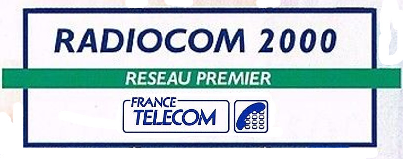

Radiocom 2000

*this doc is under construction*
History
Radiocom 2000 (sometimes R2000) was a cellular network used in France.
The network was developed by France Telekom and Matra and became the third mobile network.
There are many similarities to the NMT network, but it was a complete own design.
Development started in 1981 and the network was launched in Paris in 1985, it gradually replaced the second network "correspondance publique".
It was a cellular system, so frequencies could be used efficiently.
The system was capable of allocating channels dynamically.
Handover was implemented later and called RHD "Réseau Haute Densité" (network with high desity).
It was possible to run private base station, where own mobiles were allowed to call only.
In 1988, it had 60,000 subscribers and more than 90% of devices are installed in vehicles.
Originally the 200 MHz and 400 MHz bands were used.
Due to congesting in 1990, the 900 MHz band was introduced.
The network was closed for the exclusive benefit of the standard GSM in July 28th 2000.
- Frequency range UHF: 424.800 - 427.9875 MHz (down-link); 414.800 - 417.9875 MHz (up-link)
- 256 voice or contol channels
- Duplex distance: 10 MHz
- Channel spacing: 12.5 KHz
- Voice modulation: FM
- Signaling modulation: carrier FSK
- Frequency deviation: 1500 Hz ??? (Voice); 1425 Hz (FSK)
- Mobile station transmit power: 1 or 6..10 Watts
- Features: Speech Compandor (BS->MS only), Group calls
How it works
Please refer to
standard_r2000_by_jolly.pdf
for a description of the standard.
Setup of a base station
[Back to main page]
|